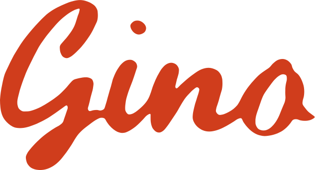

A small, free, offline Windows program for laying out zines. Place text and images on pages, see them as spreads, and print pages that fold into a booklet on the first try.
- Starts from a fold: A5 pages on A4, A6 on A5, the eight-page single-sheet fold, a custom size or a North American saddle stitch
- Text, image and line frames in millimetres that snap to margins, columns and the spine, with text that flows from frame to frame across pages
- Korean and English set together, with separate Latin and Korean fonts per paragraph style and Korean input-method support
- Prints pages alone, as spreads, or imposed in fold order, with fonts embedded in every PDF
- A readable `.zine` folder you can copy or zip; a Tauri app with light and dark colour schemes
진(zine)을 편집하는 작고 무료인 오프라인 Windows 프로그램입니다. 페이지에 글과 이미지를 놓고, 펼침면으로 보고, 접으면 바로 소책자가 되도록 인쇄합니다.
- 접는 방식에서 시작합니다: A4에 A5 페이지, A5에 A6 페이지, 한 장 8쪽 접기, 사용자 지정 크기, 북미식 중철
- 밀리미터 단위의 글·이미지·선 프레임이 여백, 단, 책등에 맞춰 붙고, 글은 프레임과 페이지를 넘어 이어집니다
- 한국어와 영어를 함께 조판하며, 문단 스타일마다 라틴 글꼴과 한글 글꼴을 따로 고르고 한글 입력기를 지원합니다
- 페이지별, 펼침면, 접는 순서대로 배치한 인쇄를 지원하고 모든 PDF에 글꼴이 포함됩니다
- 복사하거나 압축할 수 있는 읽기 쉬운 `.zine` 폴더. Tauri 앱이며 밝은/어두운 색 구성이 있습니다